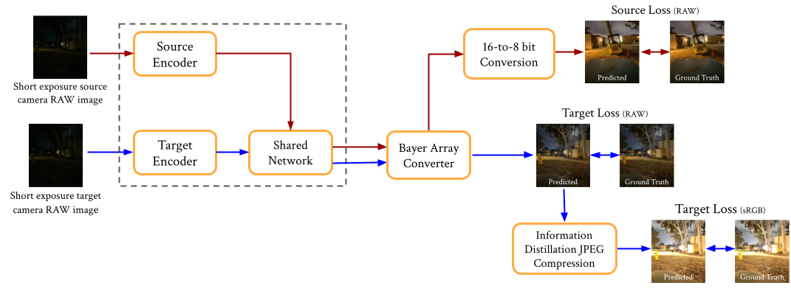
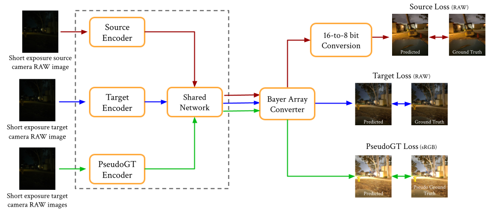
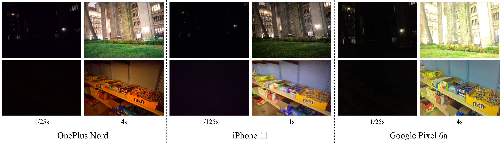
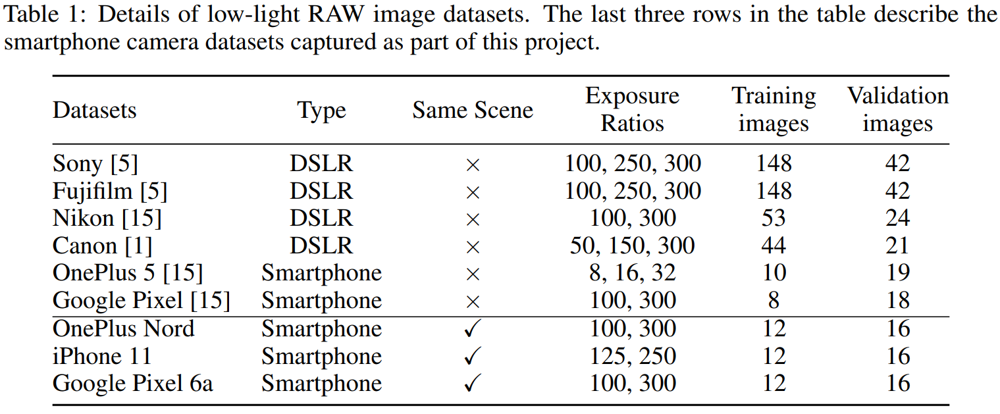

Method

With a noisy raw image captured with low-exposure time (i.e., shutter speed) as input, our CNN-based approach is trained to predict a
clean long-exposure sRGB output of the same scene. The input is multiplied by an exposure factor calculated by the ratio of output and
input exposure times. For example, to generate a 10-second long exposure output, the input 0.1-second low exposure image must be
multiplied by 100. As a result of this operation, along with illumination, the noise is also amplified proportionally. Since we multiply
the factor in the unprocessed raw domain and expect the output in the sRGB domain, the network must learn camera hardware-specific
enhancement as well as its entire ISP pipeline (lens correction, demosaicing, white balancing, color manipulation, tone curve application,
color space transform, and Gamma correction). Thus, a model trained on one specific camera data (source domain) does not translate similar
performance to a different camera (target domain), hence the domain gap. In this work, we propose to transfer the enhancement task from
large labeled source data and generate output in the target domain using few labeled target data. We also attempt to investigate semi supervised
learning using a pseudo ground truth generated by a baseline and utilize the unlabeled samples for improving enhancement performance.

Smartphone Datasets

Example short-exposure and long-exposure image pairs from the captured smartphone datasets. The short exposure images are almost entirely dark whereas
the long-exposure images contain scene information.
We have compiled a dataset of raw low-light images captured with a Google Pixel 6a, iPhone 11 and OnePlus Nord smartphone camera to train the proposed few-shot domain adaptation
architecture. Each dataset consists of short-exposure images and corresponding long exposure data captured in the .DNG format. For uniformity, there are two short-exposure
images for every long-exposure image such that the exposure ratio (ratio of exposure time between the ground-truth long-exposure image and
the input short-exposure image) is between 100 and 300, respectively. Similar to LSID and FSDA-LL, we mount the camera on a sturdy tripod and
use appropriate camera settings to capture the static scenes using a smartphone app. The distribution of images captured are included in the following table:
